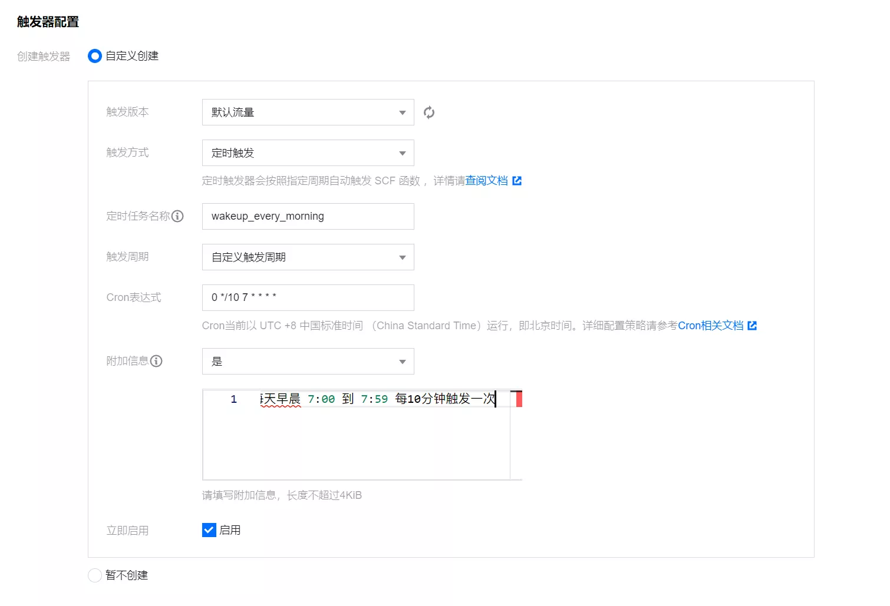

使用腾讯云函数解决 LeanCloud 流控问题
本文最后更新于：2022年3月23日 晚上
简述
建议阅读：解决 LeanCloud ‘因流控原因，通过定时任务唤醒体验版实例失败’ 的问题
我个人在此之前没有使用过云函数，所以也是看着别人写的一步一步来的，但关于本文要解决的问题，网上博客介绍的都比较简略，所以本文面向小白，希望能写一篇正儿八经能看着傻瓜式操作的教程。
需要注意解决流控问题，本质是唤醒 LeanCloud 云引擎，而不是触发 Valine-Admin 的两个云函数，所以我个人认为不需要过多的访问云引擎域名，只需要早晨通过外部访问一次云引擎域名，后续 Valine-Admin 的 self_wake 函数就可以自我唤醒了。
傻瓜式教程
首先打开腾讯云云函数网站，登录控制台，点击左侧 函数服务 ，然后点击 新建 。

选择 自定义创建 ，函数名自己取一个，例如 wakeup_leancloud ，运行环境选择 Python3.6 ，如图：
接下来编写代码，用你的 云引擎域名 替换 your URL，将下面的代码粘贴进去即可：
# -*- coding: utf8 -*-
import urllib.request
def main_handler(event, context):
url="your URL"
req=urllib.request.Request(url)
resp=urllib.request.urlopen(req)
print("外部访问运行完成！")如图：
往下滑，点击 触发器配置 ，选择 自定义创建 ，根据我们的需求选择 定时触发 ，定时任务名称自己取一个，例如 wakeup_every_morning ，触发周期选择 自定义触发周期 。
Cron 表达式自己根据需求设置，我个人认为只需要每天早晨触发一次唤醒 LeanCloud 云引擎即可，后续 LeanCloud 的定时任务就可以自我唤醒了，所以我将触发周期设置为每天早晨 7:00 到 7:59 每10分钟触发一次（会触发6次，避免失败），即 0 */10 7 * * * * 。最后点击底部 完成 。

随后云函数将自动部署，到这里就算搞定了。可以自行测试一下函数是否执行成功，以及云引擎是否成功唤醒。
其它
Cron 表达式并不复杂，不难发现通过设置 Cron 表达式可以实现各种定时触发，这里就没啥好说的了。
回到 函数服务 页面，可以看到刚才创建好的云函数：
点击函数名进入函数管理，可以进一步修改代码以及做一些其它设置。
点击左侧的 日志查询 可以查看函数的日志，是否按时运行以及是否执行成功，如图：

本站所有文章除特别声明外，均采用 CC BY-SA 4.0 协议 ，转载请注明出处！